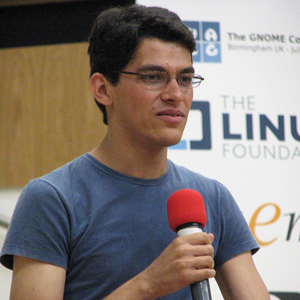

明星讲师

廖湘科
中国工程院院士，计算机系统软件专家。1985年本科毕业于清华大学计算机系，1988年硕士毕业于国防科技大学计算机学院。现任国防科技大学计算机学院院长，研究员。

Niclas Hedhman
Apache基金会VP，32年的软件工程经验，从开发192字节的微控制器到100GB的企业级服务器，从设计电路板到架构数据中心，从汇编、Forth、EXOL、C、Java到Erlang，跨越众多行业。脚步未曾停止。

Kylie Liang
FreeBSD基金会执行总监。2005年硕士毕业于中科院计算技术研究所。2005~2014年在英特尔从事*NIX 驱动开发。2014年加入微软，并带领微软的一个FreeBSD项目团队。

Federico Mena Quintero
墨西哥软件设计师。于1997年与Miguel de Icaza共同发起了GNOME项目。大学毕业后，他进入美国Red Hat公司工作。在Red Hat公司期间，他创作了GNOME Canvas，同时也是GIMP的维护者。